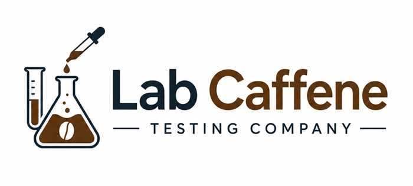
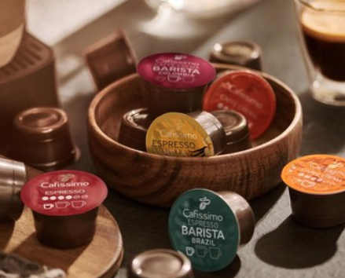

Reliable testing
High-quality chromatographic techniques, including HPLC and GC-MS capabilities, support precise and scientifically reliable caffeine analysis.

Market analysis · 2026-06-16
LabCaffeine Analytics helps coffee producers and distributors verify declared caffeine content, protect brand credibility, and meet quality and regulatory expectations with reliable laboratory data.
Who we are
Coffee producers and distributors need dependable quality control, verification of declared caffeine content, compliance with legal and regulatory requirements, and strong consumer trust.

Our solution
High-quality chromatographic techniques, including HPLC and GC-MS capabilities, support precise and scientifically reliable caffeine analysis.
LabCaffeine is positioned around repeatable results, accreditation readiness, and reports delivered through an ISO 17025 accredited laboratory model.
Verified caffeine content supports consumer confidence, proactive brand protection, and seamless regulatory compliance.
Market position
LabCaffeine does not operate in the mass market. The company works with clients who need reliable laboratory-tested results supported by quality, credibility, and facts.
LabCaffeine positions itself as a specialized analytical partner for the coffee capsule industry, providing highly accurate caffeine-content verification through advanced chromatographic techniques.
By combining scientific expertise, reliability, and regulatory compliance, LabCaffeine helps clients ensure product quality and consumer trust.
SWOT analysis
Perceptual positioning map
LabCaffeine is positioned as a premium and highly specialized partner for the coffee industry, combining advanced analytical technologies with a deep understanding of coffee-specific business needs. Unlike local food laboratories that focus on routine, high-volume testing, or university research labs that are mainly academic and not commercially driven, LabCaffeine delivers fast and business-focused solutions tailored specifically to coffee producers, roasters, and distributors.
While large international laboratories offer advanced technologies across many industries, their broad scope often limits the level of specialization they can provide.
By focusing exclusively on the coffee sector and using high-precision analytical methods such as HPLC and UV-Vis spectroscopy, LabCaffeine provides not only reliable laboratory results but also meaningful insights that support product quality, regulatory compliance, and strategic business decisions for B2B clients.
Product & service offer
Place
Pricing
| Service | Description | Price |
|---|---|---|
| Caffeine-Content Verification | Laboratory HPLC testing to determine exact caffeine levels in coffee capsules with certified reporting. | €89 per sample |
| Regulatory Compliance Report | Full analytical report including measurement uncertainty, compliance validation, and documentation for regulatory bodies. | €149 per sample |
| Recurring Quality-Control Program | Monthly testing package for manufacturers requiring continuous batch monitoring and product consistency checks. | €499 per month |
| Enterprise Testing & Consulting | Custom testing schedules, dedicated laboratory support, priority processing, and regulatory consulting services. | Custom Quote |
Promotion strategy
Goal: make coffee companies aware of LabCaffeine.
Goal: build credibility and confidence.
Goal: encourage companies to purchase testing services.
Verified caffeine content means stronger consumer trust, proactive brand protection, and seamless regulatory compliance.
Online quote request
Use this request form to outline the capsule range, target market, and reporting needs. The form runs locally in the browser for this static website version.
Mudassar Husain · Eliza Wargala · Alicja Ciesielska · Copariu Ana-Maria · Megane Tanko